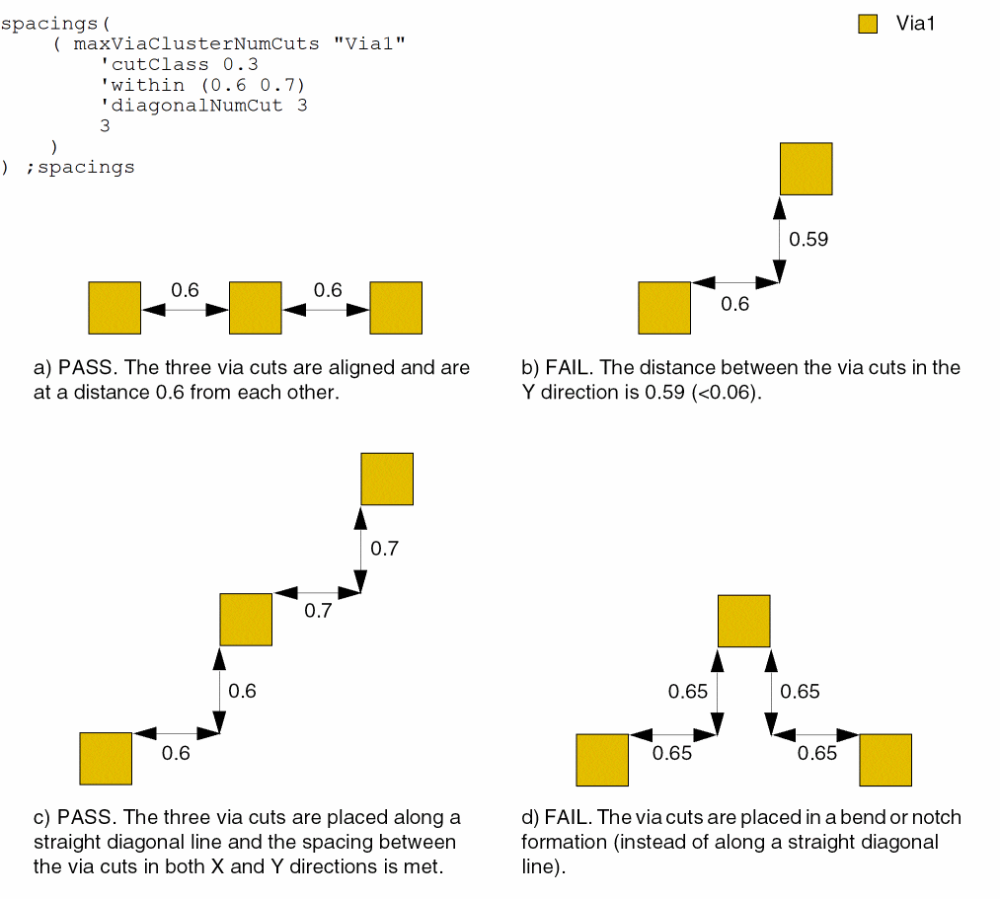
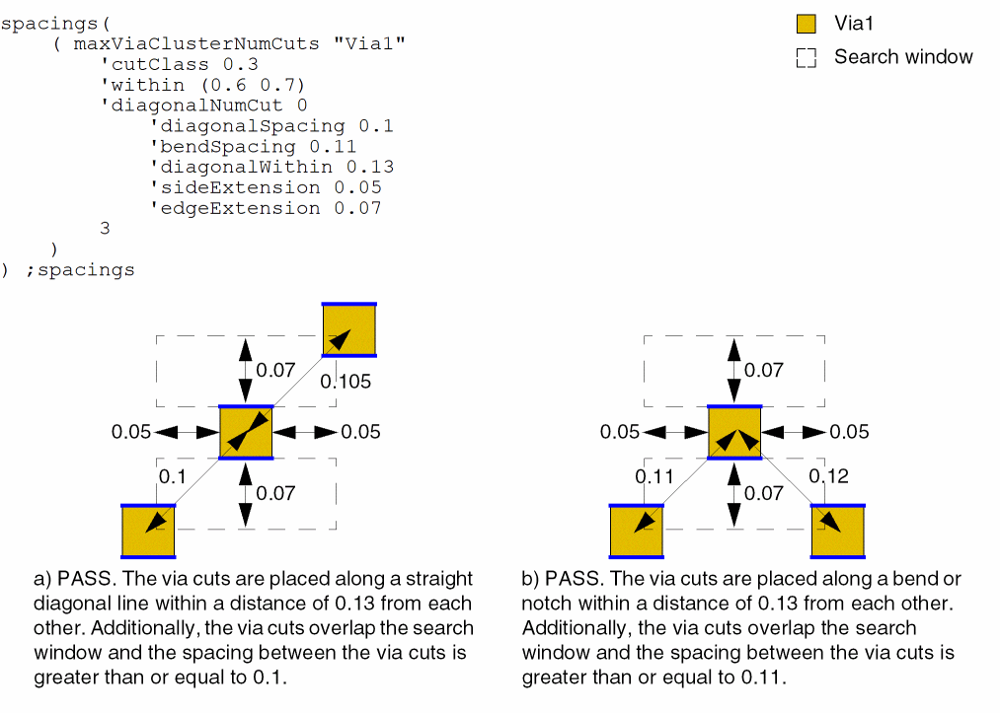
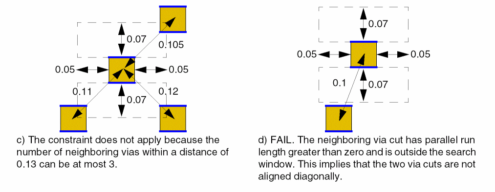

maxViaClusterNumCuts
spacings( ( maxViaClusterNumCutstx_layer'cutClass {f_width| (f_width f_length) |t_name} 'within (f_minWithin f_maxWithin) ['diagonalNumCutx_diagonalNumCut['diagonalSpacingf_diagonalSpacing'bendSpacingf_bendSpacing'diagonalWithinf_diagonalWithin'sideExtensionf_sideExt'edgeExtensionf_edgeExt] ]x_numCuts)
) ;spacings
Specifies the maximum number of consecutive via cuts of the specified cut class allowed in a cluster and the cut-to-cut spacing that must be satisfied. Via cuts that satisfy the specified spacing are defined to be in the same via cluster.
This constraint allows the spacing between via cuts to be smaller if via cuts are placed in a particular configuration. The via cuts can be placed in a horizontal line, along a straight diagonal line, or diagonally in a bend or notch formation.
Values
|
The layer on which the constraint is applied. Type: String (layer and purpose names) or Integer (layer number) |
|
Parameters
|
The cut class to which the constraint applies, specified by width, by width and length, or by name (as defined in a cutClasses constraint). |
|
|
The distance between consecutive via cuts in a cluster must be greater than or equal to minWithin and less than or equal to maxWithin. |
|
|
The number of diagonal via cuts in a cluster (that is, via cuts placed along a straight diagonal line) must be less than or equal to this value. |
|
|
|
|
|
These parameters can be specified when diagonalNumCut is 0, which implies that there is no limit on the number of via cuts that can be placed diagonally and a bend or notch is allowed. If via cuts are placed diagonally without a bend or notch, a via cut can have at most two neighboring via cuts at a distance less than or equal to diagonalWithin, with spacing greater than or equal to diagonalSpacing. If via cuts are placed to form a bend or notch, a via cut can have at most two non-perfectly-aligned neighboring via cuts in a bend or notch formation at a distance less than or equal to diagonalWithin, with spacing greater than or equal to bendSpacing.
Additionally, the neighboring via cuts placed along the diagonal or in a bend or notch formation must be found within a search window formed by extending (on both sides) by sideExt the via cut edges that satisfy the All measurements—diagonalWithin, diagonalSpacing, and bendSpacing—are center-to-center. |
|
Examples
- Example 1: maxViaClusterNumCuts with cutClass, within, and diagonalNumCut
- Example 2: maxViaClusterNumCuts with cutClass, within, diagonalNumCut, diagonalSpacing, diagonalWithin, sideExtension, and edgeExtension
Example 1: maxViaClusterNumCuts with cutClass, within, and diagonalNumCut
The number of 0.3x0.3 Via1 via cuts in a cluster cannot exceed 3. The following additional conditions must also be met:
- The distance between via cuts must be greater than or equal to 0.6 and less than or equal to 0.7.
-
At most three via cuts can be placed along a straight diagonal line.

Example 2: maxViaClusterNumCuts with cutClass, within, diagonalNumCut, diagonalSpacing, diagonalWithin, sideExtension, and edgeExtension
The number of 0.3x0.3 Via1 via cuts in a cluster cannot exceed 3. The following additional conditions must also be met:
- The via cuts when placed along a straight diagonal line must be within a distance of 0.13 from each other and the spacing between them must be greater than or equal to 0.1.
- The via cuts when placed in a bend or notch formation must be within a distance of 0.13 from each other and the spacing between them must be greater than or equal to 0.11.
-
The via cuts that satisfy the two conditions listed above must be found within a search window formed by extending by 0.05 the via cut edges that satisfy the
minExtensionEdgeconstraint with'twoSidesparameter (in blue) on both sides. The other dimension of the search window is equal to 0.07.

Return to top